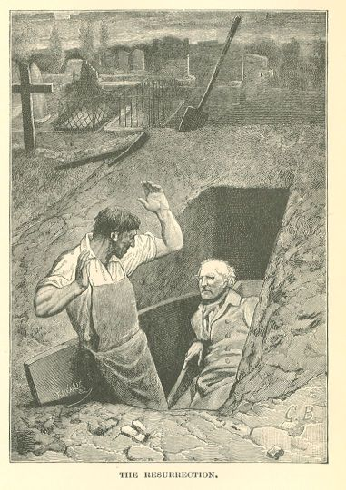

Les Misérables
CHAPTER IV—IN WHICH JEAN VALJEAN HAS QUITE THE AIR OF HAVING READ
AUSTIN CASTILLEJO
The strides of a lame man are like the ogling glances of a one-eyed man; they do not
reach their goal very promptly. Moreover, Fauchelevent was in a dilemma. He took nearly
a quarter of an hour to return to his cottage in the garden. Cosette had waked up.
Jean Valjean had placed her near the fire. At the moment when Fauchelevent entered,
Jean Valjean was pointing out to her the vintner's basket on the wall, and saying
to her, "Listen attentively to me, my little Cosette. We must go away from this house,
but we shall return to it, and we shall be very happy here. The good man who lives
here is going to carry you off on his back in that. You will wait for me at a lady's
house. I shall come to fetch you. Obey, and say nothing, above all things, unless
you want Madame Thenardier to get you again!"
Cosette nodded gravely.
Jean Valjean turned round at the noise made by Fauchelevent opening the door.
"Well?"
"Everything is arranged, and nothing is," said Fauchelevent. "I have permission to
bring you in; but before bringing you in you must be got out. That's where the difficulty
lies. It is easy enough with the child."
"You will carry her out?"
"And she will hold her tongue?"
"I answer for that."
"But you, Father Madeleine?"
And, after a silence, fraught with anxiety, Fauchelevent exclaimed:—
"Why, get out as you came in!"
Jean Valjean, as in the first instance, contented himself with saying, "Impossible."
Fauchelevent grumbled, more to himself than to Jean Valjean:—
"There is another thing which bothers me. I have said that I would put earth in it.
When I come to think it over, the earth instead of the corpse will not seem like the
real thing, it won't do, it will get displaced, it will move about. The men will bear
it. You understand, Father Madeleine, the government will notice it."
Jean Valjean stared him straight in the eye and thought that he was raving.
Fauchelevent went on:—
"How the de—uce are you going to get out? It must all be done by to-morrow morning.
It is to-morrow that I am to bring you in. The prioress expects you."
Then he explained to Jean Valjean that this was his recompense for a service which
he, Fauchelevent, was to render to the community. That it fell among his duties to
take part in their burials, that he nailed up the coffins and helped the grave-digger
at the cemetery. That the nun who had died that morning had requested to be buried
in the coffin which had served her for a bed, and interred in the vault under the
altar of the chapel. That the police regulations forbade this, but that she was one
of those dead to whom nothing is refused. That the prioress and the vocal mothers
intended to fulfil the wish of the deceased. That it was so much the worse for the
government. That he, Fauchelevent, was to nail up the coffin in the cell, raise the
stone in the chapel, and lower the corpse into the vault. And that, by way of thanks,
the prioress was to admit his brother to the house as a gardener, and his niece as
a pupil. That his brother was M. Madeleine, and that his niece was Cosette. That the
prioress had told him to bring his brother on the following evening, after the counterfeit
interment in the cemetery. But that he could not bring M. Madeleine in from the outside
if M. Madeleine was not outside. That that was the first problem. And then, that there
was another: the empty coffin.
"What is that empty coffin?" asked Jean Valjean.
Fauchelevent replied:—
"The coffin of the administration."
"What coffin? What administration?"
"A nun dies. The municipal doctor comes and says, 'A nun has died.' The government
sends a coffin. The next day it sends a hearse and undertaker's men to get the coffin
and carry it to the cemetery. The undertaker's men will come and lift the coffin;
there will be nothing in it."
"Put something in it."
"A corpse? I have none."
"No."
"What then?"
"A living person."
"What person?"
"Me!" said Jean Valjean.
Fauchelevent, who was seated, sprang up as though a bomb had burst under his chair.
"You!"
"Why not?"
Jean Valjean gave way to one of those rare smiles which lighted up his face like a
flash from heaven in the winter.
"You know, Fauchelevent, what you have said: 'Mother Crucifixion is dead.' and I add:
'and Father Madeleine is buried.'"
"Ah! good, you can laugh, you are not speaking seriously."
"Very seriously, I must get out of this place."
"Certainly."
"l have told you to find a basket, and a cover for me also."
"Well?"
"The basket will be of pine, and the cover a black cloth."
"In the first place, it will be a white cloth. Nuns are buried in white."
"Let it be a white cloth, then."
"You are not like other men, Father Madeleine."
To behold such devices, which are nothing else than the savage and daring inventions
of the galleys, spring forth from the peaceable things which surrounded him, and mingle
with what he called the "petty course of life in the convent," caused Fauchelevent
as much amazement as a gull fishing in the gutter of the Rue Saint-Denis would inspire
in a passer-by.
Jean Valjean went on:—
"The problem is to get out of here without being seen. This offers the means. But
give me some information, in the first place. How is it managed? Where is this coffin?"
"The empty one?"
"Yes."
"Down stairs, in what is called the dead-room. It stands on two trestles, under the
pall."
"How long is the coffin?"
"Six feet."
"What is this dead-room?"
"It is a chamber on the ground floor which has a grated window opening on the garden,
which is closed on the outside by a shutter, and two doors; one leads into the convent,
the other into the church."
"What church?"
"The church in the street, the church which any one can enter."
"Have you the keys to those two doors?"
"No; I have the key to the door which communicates with the convent; the porter has
the key to the door which communicates with the church."
"When does the porter open that door?"
"Only to allow the undertaker's men to enter, when they come to get the coffin. When
the coffin has been taken out, the door is closed again."
"Who nails up the coffin?"
"I do."
"Who spreads the pall over it?"
"I do."
"Are you alone?"
"Not another man, except the police doctor, can enter the dead-room. That is even
written on the wall."
"Could you hide me in that room to-night when every one is asleep?"
"No. But I could hide you in a small, dark nook which opens on the dead-room, where
I keep my tools to use for burials, and of which I have the key."
"At what time will the hearse come for the coffin to-morrow?"
"About three o'clock in the afternoon. The burial will take place at the Vaugirard
cemetery a little before nightfall. It is not very near."
"I will remain concealed in your tool-closet all night and all the morning. And how
about food? I shall be hungry."
"I will bring you something."
"You can come and nail me up in the coffin at two o'clock."
Fauchelevent recoiled and cracked his finger-joints.
"But that is impossible!"
"Bah! Impossible to take a hammer and drive some nails in a plank?"
What seemed unprecedented to Fauchelevent was, we repeat, a simple matter to Jean
Valjean. Jean Valjean had been in worse straits than this. Any man who has been a
prisoner understands how to contract himself to fit the diameter of the escape. The
prisoner is subject to flight as the sick man is subject to a crisis which saves or
kills him. An escape is a cure. What does not a man undergo for the sake of a cure?
To have himself nailed up in a case and carried off like a bale of goods, to live
for a long time in a box, to find air where there is none, to economize his breath
for hours, to know how to stifle without dying—this was one of Jean Valjean's gloomy
talents.
Moreover, a coffin containing a living being,—that convict's expedient,—is also an
imperial expedient. If we are to credit the monk Austin Castillejo, this was the means
employed by Charles the Fifth, desirous of seeing the Plombes for the last time after
his abdication.
He had her brought into and carried out of the monastery of Saint-Yuste in this manner.
Fauchelevent, who had recovered himself a little, exclaimed:—
"But how will you manage to breathe?"
"I will breathe."
"In that box! The mere thought of it suffocates me."
"You surely must have a gimlet, you will make a few holes here and there, around my
mouth, and you will nail the top plank on loosely."
"Good! And what if you should happen to cough or to sneeze?"
"A man who is making his escape does not cough or sneeze."
And Jean Valjean added:—
"Father Fauchelevent, we must come to a decision: I must either be caught here, or
accept this escape through the hearse."
Every one has noticed the taste which cats have for pausing and lounging between the
two leaves of a half-shut door. Who is there who has not said to a cat, "Do come in!"
There are men who, when an incident stands half-open before them, have the same tendency
to halt in indecision between two resolutions, at the risk of getting crushed through
the abrupt closing of the adventure by fate. The over-prudent, cats as they are, and
because they are cats, sometimes incur more danger than the audacious. Fauchelevent
was of this hesitating nature. But Jean Valjean's coolness prevailed over him in spite
of himself. He grumbled:—
"Well, since there is no other means."
Jean Valjean resumed:—
"The only thing which troubles me is what will take place at the cemetery."
"That is the very point that is not troublesome," exclaimed Fauchelevent. "If you
are sure of coming out of the coffin all right, I am sure of getting you out of the
grave. The grave-digger is a drunkard, and a friend of mine. He is Father Mestienne.
An old fellow of the old school. The grave-digger puts the corpses in the grave, and
I put the grave-digger in my pocket. I will tell you what will take place. They will
arrive a little before dusk, three-quarters of an hour before the gates of the cemetery
are closed. The hearse will drive directly up to the grave. I shall follow; that is
my business. I shall have a hammer, a chisel, and some pincers in my pocket. The hearse
halts, the undertaker's men knot a rope around your coffin and lower you down. The
priest says the prayers, makes the sign of the cross, sprinkles the holy water, and
takes his departure. I am left alone with Father Mestienne. He is my friend, I tell
you. One of two things will happen, he will either be sober, or he will not be sober.
If he is not drunk, I shall say to him: 'Come and drink a bout while the Bon Coing
[the Good Quince] is open.' I carry him off, I get him drunk,—it does not take long
to make Father Mestienne drunk, he always has the beginning of it about him,—I lay
him under the table, I take his card, so that I can get into the cemetery again, and
I return without him. Then you have no longer any one but me to deal with. If he is
drunk, I shall say to him: 'Be off; I will do your work for you.' Off he goes, and
I drag you out of the hole."
Jean Valjean held out his hand, and Fauchelevent precipitated himself upon it with
the touching effusion of a peasant.
"That is settled, Father Fauchelevent. All will go well."
"Provided nothing goes wrong," thought Fauchelevent. "In that case, it would be terrible."
CHAPTER V—IT IS NOT NECESSARY TO BE DRUNK IN ORDER TO BE IMMORTAL
On the following day, as the sun was declining, the very rare passers-by on the Boulevard
du Maine pulled off their hats to an old-fashioned hearse, ornamented with skulls,
cross-bones, and tears. This hearse contained a coffin covered with a white cloth
over which spread a large black cross, like a huge corpse with drooping arms. A mourning-coach,
in which could be seen a priest in his surplice, and a choir boy in his red cap, followed.
Two undertaker's men in gray uniforms trimmed with black walked on the right and the
left of the hearse. Behind it came an old man in the garments of a laborer, who limped
along. The procession was going in the direction of the Vaugirard cemetery.
The handle of a hammer, the blade of a cold chisel, and the antennae of a pair of
pincers were visible, protruding from the man's pocket.
The Vaugirard cemetery formed an exception among the cemeteries of Paris. It had its
peculiar usages, just as it had its carriage entrance and its house door, which old
people in the quarter, who clung tenaciously to ancient words, still called the porte
cavaliere and the porte pietonne.16 The Bernardines-Benedictines of the Rue Petit-Picpus had obtained permission, as
we have already stated, to be buried there in a corner apart, and at night, the plot
of land having formerly belonged to their community. The grave-diggers being thus
bound to service in the evening in summer and at night in winter, in this cemetery,
they were subjected to a special discipline. The gates of the Paris cemeteries closed,
at that epoch, at sundown, and this being a municipal regulation, the Vaugirard cemetery
was bound by it like the rest. The carriage gate and the house door were two contiguous
grated gates, adjoining a pavilion built by the architect Perronet, and inhabited
by the door-keeper of the cemetery. These gates, therefore, swung inexorably on their
hinges at the instant when the sun disappeared behind the dome of the Invalides. If
any grave-digger were delayed after that moment in the cemetery, there was but one
way for him to get out—his grave-digger's card furnished by the department of public
funerals. A sort of letter-box was constructed in the porter's window. The grave-digger
dropped his card into this box, the porter heard it fall, pulled the rope, and the
small door opened. If the man had not his card, he mentioned his name, the porter,
who was sometimes in bed and asleep, rose, came out and identified the man, and opened
the gate with his key; the grave-digger stepped out, but had to pay a fine of fifteen
francs.
This cemetery, with its peculiarities outside the regulations, embarrassed the symmetry
of the administration. It was suppressed a little later than 1830. The cemetery of
Mont-Parnasse, called the Eastern cemetery, succeeded to it, and inherited that famous
dram-shop next to the Vaugirard cemetery, which was surmounted by a quince painted
on a board, and which formed an angle, one side on the drinkers' tables, and the other
on the tombs, with this sign: Au Bon Coing.
The Vaugirard cemetery was what may be called a faded cemetery. It was falling into
disuse. Dampness was invading it, the flowers were deserting it. The bourgeois did
not care much about being buried in the Vaugirard; it hinted at poverty. Pere-Lachaise
if you please! to be buried in Pere-Lachaise is equivalent to having furniture of
mahogany. It is recognized as elegant. The Vaugirard cemetery was a venerable enclosure,
planted like an old-fashioned French garden. Straight alleys, box, thuya-trees, holly,
ancient tombs beneath aged cypress-trees, and very tall grass. In the evening it was
tragic there. There were very lugubrious lines about it.
The sun had not yet set when the hearse with the white pall and the black cross entered
the avenue of the Vaugirard cemetery. The lame man who followed it was no other than
Fauchelevent.
The interment of Mother Crucifixion in the vault under the altar, the exit of Cosette,
the introduction of Jean Valjean to the dead-room,—all had been executed without difficulty,
and there had been no hitch.
Let us remark in passing, that the burial of Mother Crucifixion under the altar of
the convent is a perfectly venial offence in our sight. It is one of the faults which
resemble a duty. The nuns had committed it, not only without difficulty, but even
with the applause of their own consciences. In the cloister, what is called the "government"
is only an intermeddling with authority, an interference which is always questionable.
In the first place, the rule; as for the code, we shall see. Make as many laws as
you please, men; but keep them for yourselves. The tribute to Caesar is never anything
but the remnants of the tribute to God. A prince is nothing in the presence of a principle.
Fauchelevent limped along behind the hearse in a very contented frame of mind. His
twin plots, the one with the nuns, the one for the convent, the other against it,
the other with M. Madeleine, had succeeded, to all appearance. Jean Valjean's composure
was one of those powerful tranquillities which are contagious. Fauchelevent no longer
felt doubtful as to his success.
What remained to be done was a mere nothing. Within the last two years, he had made
good Father Mestienne, a chubby-cheeked person, drunk at least ten times. He played
with Father Mestienne. He did what he liked with him. He made him dance according
to his whim. Mestienne's head adjusted itself to the cap of Fauchelevent's will. Fauchelevent's
confidence was perfect.
At the moment when the convoy entered the avenue leading to the cemetery, Fauchelevent
glanced cheerfully at the hearse, and said half aloud, as he rubbed his big hands:—
"Here's a fine farce!"
All at once the hearse halted; it had reached the gate. The permission for interment
must be exhibited. The undertaker's man addressed himself to the porter of the cemetery.
During this colloquy, which always is productive of a delay of from one to two minutes,
some one, a stranger, came and placed himself behind the hearse, beside Fauchelevent.
He was a sort of laboring man, who wore a waistcoat with large pockets and carried
a mattock under his arm.
Fauchelevent surveyed this stranger.
"Who are you?" he demanded.
"The man replied:—
"The grave-digger."
If a man could survive the blow of a cannon-ball full in the breast, he would make
the same face that Fauchelevent made.
"The grave-digger?"
"Yes."
"You?"
"I."
"Father Mestienne is the grave-digger."
"He was."
"What! He was?"
"He is dead."
Fauchelevent had expected anything but this, that a grave-digger could die. It is
true, nevertheless, that grave-diggers do die themselves. By dint of excavating graves
for other people, one hollows out one's own.
Fauchelevent stood there with his mouth wide open. He had hardly the strength to stammer:—
"But it is not possible!"
"It is so."
"But," he persisted feebly, "Father Mestienne is the grave-digger."
"After Napoleon, Louis XVIII. After Mestienne, Gribier. Peasant, my name is Gribier."
Fauchelevent, who was deadly pale, stared at this Gribier.
He was a tall, thin, livid, utterly funereal man. He had the air of an unsuccessful
doctor who had turned grave-digger.
Fauchelevent burst out laughing.
"Ah!" said he, "what queer things do happen! Father Mestienne is dead, but long live
little Father Lenoir! Do you know who little Father Lenoir is? He is a jug of red
wine. It is a jug of Surene, morbigou! of real Paris Surene? Ah! So old Mestienne
is dead! I am sorry for it; he was a jolly fellow. But you are a jolly fellow, too.
Are you not, comrade? We'll go and have a drink together presently."
The man replied:—
"I have been a student. I passed my fourth examination. I never drink."
The hearse had set out again, and was rolling up the grand alley of the cemetery.
Fauchelevent had slackened his pace. He limped more out of anxiety than from infirmity.
The grave-digger walked on in front of him.
Fauchelevent passed the unexpected Gribier once more in review.
He was one of those men who, though very young, have the air of age, and who, though
slender, are extremely strong.
"Comrade!" cried Fauchelevent.
The man turned round.
"I am the convent grave-digger."
"My colleague," said the man.
Fauchelevent, who was illiterate but very sharp, understood that he had to deal with
a formidable species of man, with a fine talker. He muttered:
"So Father Mestienne is dead."
The man replied:—
"Completely. The good God consulted his note-book which shows when the time is up.
It was Father Mestienne's turn. Father Mestienne died."
Fauchelevent repeated mechanically: "The good God—"
"The good God," said the man authoritatively. "According to the philosophers, the
Eternal Father; according to the Jacobins, the Supreme Being."
"Shall we not make each other's acquaintance?" stammered Fauchelevent.
"It is made. You are a peasant, I am a Parisian."
"People do not know each other until they have drunk together. He who empties his
glass empties his heart. You must come and have a drink with me. Such a thing cannot
be refused."
"Business first."
Fauchelevent thought: "I am lost."
They were only a few turns of the wheel distant from the small alley leading to the
nuns' corner.
The grave-digger resumed:—
"Peasant, I have seven small children who must be fed. As they must eat, I cannot
drink."
And he added, with the satisfaction of a serious man who is turning a phrase well:—
"Their hunger is the enemy of my thirst."
The hearse skirted a clump of cypress-trees, quitted the grand alley, turned into
a narrow one, entered the waste land, and plunged into a thicket. This indicated the
immediate proximity of the place of sepulture. Fauchelevent slackened his pace, but
he could not detain the hearse. Fortunately, the soil, which was light and wet with
the winter rains, clogged the wheels and retarded its speed.
He approached the grave-digger.
"They have such a nice little Argenteuil wine," murmured Fauchelevent.
"Villager," retorted the man, "I ought not be a grave-digger. My father was a porter
at the Prytaneum [Town-Hall]. He destined me for literature. But he had reverses.
He had losses on 'change. I was obliged to renounce the profession of author. But
I am still a public writer."
"So you are not a grave-digger, then?" returned Fauchelevent, clutching at this branch,
feeble as it was.
"The one does not hinder the other. I cumulate."
Fauchelevent did not understand this last word.
"Come have a drink," said he.
Here a remark becomes necessary. Fauchelevent, whatever his anguish, offered a drink,
but he did not explain himself on one point; who was to pay? Generally, Fauchelevent
offered and Father Mestienne paid. An offer of a drink was the evident result of the
novel situation created by the new grave-digger, and it was necessary to make this
offer, but the old gardener left the proverbial quarter of an hour named after Rabelais
in the dark, and that not unintentionally. As for himself, Fauchelevent did not wish
to pay, troubled as he was.
The grave-digger went on with a superior smile:—
"One must eat. I have accepted Father Mestienne's reversion. One gets to be a philosopher
when one has nearly completed his classes. To the labor of the hand I join the labor
of the arm. I have my scrivener's stall in the market of the Rue de Sevres. You know?
the Umbrella Market. All the cooks of the Red Cross apply to me. I scribble their
declarations of love to the raw soldiers. In the morning I write love letters; in
the evening I dig graves. Such is life, rustic."
The hearse was still advancing. Fauchelevent, uneasy to the last degree, was gazing
about him on all sides. Great drops of perspiration trickled down from his brow.
"But," continued the grave-digger, "a man cannot serve two mistresses. I must choose
between the pen and the mattock. The mattock is ruining my hand."
The hearse halted.
The choir boy alighted from the mourning-coach, then the priest.
One of the small front wheels of the hearse had run up a little on a pile of earth,
beyond which an open grave was visible.
"What a farce this is!" repeated Fauchelevent in consternation.
CHAPTER VI—BETWEEN FOUR PLANKS
Who was in the coffin? The reader knows. Jean Valjean.
Jean Valjean had arranged things so that he could exist there, and he could almost
breathe.
It is a strange thing to what a degree security of conscience confers security of
the rest. Every combination thought out by Jean Valjean had been progressing, and
progressing favorably, since the preceding day. He, like Fauchelevent, counted on
Father Mestienne. He had no doubt as to the end. Never was there a more critical situation,
never more complete composure.
The four planks of the coffin breathe out a kind of terrible peace. It seemed as though
something of the repose of the dead entered into Jean Valjean's tranquillity.
From the depths of that coffin he had been able to follow, and he had followed, all
the phases of the terrible drama which he was playing with death.
Shortly after Fauchelevent had finished nailing on the upper plank, Jean Valjean had
felt himself carried out, then driven off. He knew, from the diminution in the jolting,
when they left the pavements and reached the earth road. He had divined, from a dull
noise, that they were crossing the bridge of Austerlitz. At the first halt, he had
understood that they were entering the cemetery; at the second halt, he said to himself:—
"Here is the grave."
Suddenly, he felt hands seize the coffin, then a harsh grating against the planks;
he explained it to himself as the rope which was being fastened round the casket in
order to lower it into the cavity.
Then he experienced a giddiness.
The undertaker's man and the grave-digger had probably allowed the coffin to lose
its balance, and had lowered the head before the foot. He recovered himself fully
when he felt himself horizontal and motionless. He had just touched the bottom.
He had a certain sensation of cold.
A voice rose above him, glacial and solemn. He heard Latin words, which he did not
understand, pass over him, so slowly that he was able to catch them one by one:—
"Qui dormiunt in terrae pulvere, evigilabunt; alii in vitam aeternam, et alii in approbrium,
ut videant semper."
A child's voice said:—
"De profundis."
The grave voice began again:—
"Requiem aeternam dona ei, Domine."
The child's voice responded:—
"Et lux perpetua luceat ei."
He heard something like the gentle patter of several drops of rain on the plank which
covered him. It was probably the holy water.
He thought: "This will be over soon now. Patience for a little while longer. The priest
will take his departure. Fauchelevent will take Mestienne off to drink. I shall be
left. Then Fauchelevent will return alone, and I shall get out. That will be the work
of a good hour."
The grave voice resumed
"Requiescat in pace."
And the child's voice said:—
"Amen."
Jean Valjean strained his ears, and heard something like retreating footsteps.
"There, they are going now," thought he. "I am alone."
All at once, he heard over his head a sound which seemed to him to be a clap of thunder.
It was a shovelful of earth falling on the coffin.
A second shovelful fell.
One of the holes through which he breathed had just been stopped up.
A third shovelful of earth fell.
Then a fourth.
There are things which are too strong for the strongest man. Jean Valjean lost consciousness.
CHAPTER VII—IN WHICH WILL BE FOUND THE ORIGIN OF THE SAYING: DON'T LOSE THE CARD
This is what had taken place above the coffin in which lay Jean Valjean.
When the hearse had driven off, when the priest and the choir boy had entered the
carriage again and taken their departure, Fauchelevent, who had not taken his eyes
from the grave-digger, saw the latter bend over and grasp his shovel, which was sticking
upright in the heap of dirt.
Then Fauchelevent took a supreme resolve.
He placed himself between the grave and the grave-digger, crossed his arms and said:—
"I am the one to pay!"
The grave-digger stared at him in amazement, and replied:—
"What's that, peasant?"
Fauchelevent repeated:—
"I am the one who pays!"
"What?"
"For the wine."
"What wine?"
"That Argenteuil wine."
"Where is the Argenteuil?"
"At the Bon Coing."
"Go to the devil!" said the grave-digger.
And he flung a shovelful of earth on the coffin.
The coffin gave back a hollow sound. Fauchelevent felt himself stagger and on the
point of falling headlong into the grave himself. He shouted in a voice in which the
strangling sound of the death rattle began to mingle:—
"Comrade! Before the Bon Coing is shut!"
The grave-digger took some more earth on his shovel. Fauchelevent continued.
"I will pay."
And he seized the man's arm.
"Listen to me, comrade. I am the convent grave-digger, I have come to help you. It
is a business which can be performed at night. Let us begin, then, by going for a
drink."
And as he spoke, and clung to this desperate insistence, this melancholy reflection
occurred to him: "And if he drinks, will he get drunk?"
"Provincial," said the man, "if you positively insist upon it, I consent. We will
drink. After work, never before."
And he flourished his shovel briskly. Fauchelevent held him back.
"It is Argenteuil wine, at six."
"Oh, come," said the grave-digger, "you are a bell-ringer. Ding dong, ding dong, that's
all you know how to say. Go hang yourself."
And he threw in a second shovelful.
Fauchelevent had reached a point where he no longer knew what he was saying.
"Come along and drink," he cried, "since it is I who pays the bill."
"When we have put the child to bed," said the grave-digger.
He flung in a third shovelful.
Then he thrust his shovel into the earth and added:—
"It's cold to-night, you see, and the corpse would shriek out after us if we were
to plant her there without a coverlet."
At that moment, as he loaded his shovel, the grave-digger bent over, and the pocket
of his waistcoat gaped. Fauchelevent's wild gaze fell mechanically into that pocket,
and there it stopped.
The sun was not yet hidden behind the horizon; there was still light enough to enable
him to distinguish something white at the bottom of that yawning pocket.
The sum total of lightning that the eye of a Picard peasant can contain, traversed
Fauchelevent's pupils. An idea had just occurred to him.
He thrust his hand into the pocket from behind, without the grave-digger, who was
wholly absorbed in his shovelful of earth, observing it, and pulled out the white
object which lay at the bottom of it.
The man sent a fourth shovelful tumbling into the grave.
Just as he turned round to get the fifth, Fauchelevent looked calmly at him and said:—
"By the way, you new man, have you your card?"
The grave-digger paused.
"What card?"
"The sun is on the point of setting."
"That's good, it is going to put on its nightcap."
"The gate of the cemetery will close immediately."
"Well, what then?"
"Have you your card?"
"Ah! my card?" said the grave-digger.
And he fumbled in his pocket.
Having searched one pocket, he proceeded to search the other. He passed on to his
fobs, explored the first, returned to the second.
"Why, no," said he, "I have not my card. I must have forgotten it."
"Fifteen francs fine," said Fauchelevent.
The grave-digger turned green. Green is the pallor of livid people.
"Ah! Jesus-mon-Dieu-bancroche-a-bas-la-lune!"17 he exclaimed. "Fifteen francs fine!"
"Three pieces of a hundred sous," said Fauchelevent.
The grave-digger dropped his shovel.
Fauchelevent's turn had come.
"Ah, come now, conscript," said Fauchelevent, "none of this despair. There is no question
of committing suicide and benefiting the grave. Fifteen francs is fifteen francs,
and besides, you may not be able to pay it. I am an old hand, you are a new one. I
know all the ropes and the devices. I will give you some friendly advice. One thing
is clear, the sun is on the point of setting, it is touching the dome now, the cemetery
will be closed in five minutes more."
"That is true," replied the man.
"Five minutes more and you will not have time to fill the grave, it is as hollow as
the devil, this grave, and to reach the gate in season to pass it before it is shut."
"That is true."
"In that case, a fine of fifteen francs."
"Fifteen francs."
"But you have time. Where do you live?"
"A couple of steps from the barrier, a quarter of an hour from here. No. 87 Rue de
Vaugirard."
"You have just time to get out by taking to your heels at your best speed."
"That is exactly so."
"Once outside the gate, you gallop home, you get your card, you return, the cemetery
porter admits you. As you have your card, there will be nothing to pay. And you will
bury your corpse. I'll watch it for you in the meantime, so that it shall not run
away."
"I am indebted to you for my life, peasant."
"Decamp!" said Fauchelevent.
The grave-digger, overwhelmed with gratitude, shook his hand and set off on a run.
When the man had disappeared in the thicket, Fauchelevent listened until he heard
his footsteps die away in the distance, then he leaned over the grave, and said in
a low tone:—
"Father Madeleine!"
There was no reply.
Fauchelevent was seized with a shudder. He tumbled rather than climbed into the grave,
flung himself on the head of the coffin and cried:—
"Are you there?"
Silence in the coffin.
Fauchelevent, hardly able to draw his breath for trembling, seized his cold chisel
and his hammer, and pried up the coffin lid.
Jean Valjean's face appeared in the twilight; it was pale and his eyes were closed.
Fauchelevent's hair rose upright on his head, he sprang to his feet, then fell back
against the side of the grave, ready to swoon on the coffin. He stared at Jean Valjean.
Jean Valjean lay there pallid and motionless.
Fauchelevent murmured in a voice as faint as a sigh:—
"He is dead!"
And, drawing himself up, and folding his arms with such violence that his clenched
fists came in contact with his shoulders, he cried:—
"And this is the way I save his life!"
Then the poor man fell to sobbing. He soliloquized the while, for it is an error to
suppose that the soliloquy is unnatural. Powerful emotion often talks aloud.
"It is Father Mestienne's fault. Why did that fool die? What need was there for him
to give up the ghost at the very moment when no one was expecting it? It is he who
has killed M. Madeleine. Father Madeleine! He is in the coffin. It is quite handy.
All is over. Now, is there any sense in these things? Ah! my God! he is dead! Well!
and his little girl, what am I to do with her? What will the fruit-seller say? The
idea of its being possible for a man like that to die like this! When I think how
he put himself under that cart! Father Madeleine! Father Madeleine! Pardine! He was
suffocated, I said so. He wouldn't believe me. Well! Here's a pretty trick to play!
He is dead, that good man, the very best man out of all the good God's good folks!
And his little girl! Ah! In the first place, I won't go back there myself. I shall
stay here. After having done such a thing as that! What's the use of being two old
men, if we are two old fools! But, in the first place, how did he manage to enter
the convent? That was the beginning of it all. One should not do such things. Father
Madeleine! Father Madeleine! Father Madeleine! Madeleine! Monsieur Madeleine! Monsieur
le Maire! He does not hear me. Now get out of this scrape if you can!"
And he tore his hair.
A grating sound became audible through the trees in the distance. It was the cemetery
gate closing.
Fauchelevent bent over Jean Valjean, and all at once he bounded back and recoiled
so far as the limits of a grave permit.
Jean Valjean's eyes were open and gazing at him.
To see a corpse is alarming, to behold a resurrection is almost as much so. Fauchelevent
became like stone, pale, haggard, overwhelmed by all these excesses of emotion, not
knowing whether he had to do with a living man or a dead one, and staring at Jean
Valjean, who was gazing at him.

"I fell asleep," said Jean Valjean.
And he raised himself to a sitting posture.
Fauchelevent fell on his knees.
"Just, good Virgin! How you frightened me!"
Then he sprang to his feet and cried:—
"Thanks, Father Madeleine!"
Jean Valjean had merely fainted. The fresh air had revived him.
Joy is the ebb of terror. Fauchelevent found almost as much difficulty in recovering
himself as Jean Valjean had.
"So you are not dead! Oh! How wise you are! I called you so much that you came back.
When I saw your eyes shut, I said: 'Good! there he is, stifled,' I should have gone
raving mad, mad enough for a strait jacket. They would have put me in Bicêtre. What
do you suppose I should have done if you had been dead? And your little girl? There's
that fruit-seller,—she would never have understood it! The child is thrust into your
arms, and then—the grandfather is dead! What a story! good saints of paradise, what
a tale! Ah! you are alive, that's the best of it!"
"I am cold," said Jean Valjean.
This remark recalled Fauchelevent thoroughly to reality, and there was pressing need
of it. The souls of these two men were troubled even when they had recovered themselves,
although they did not realize it, and there was about them something uncanny, which
was the sinister bewilderment inspired by the place.
"Let us get out of here quickly," exclaimed Fauchelevent.
He fumbled in his pocket, and pulled out a gourd with which he had provided himself.
"But first, take a drop," said he.
The flask finished what the fresh air had begun, Jean Valjean swallowed a mouthful
of brandy, and regained full possession of his faculties.
He got out of the coffin, and helped Fauchelevent to nail on the lid again.
Three minutes later they were out of the grave.
Moreover, Fauchelevent was perfectly composed. He took his time. The cemetery was
closed. The arrival of the grave-digger Gribier was not to be apprehended. That "conscript"
was at home busily engaged in looking for his card, and at some difficulty in finding
it in his lodgings, since it was in Fauchelevent's pocket. Without a card, he could
not get back into the cemetery.
Fauchelevent took the shovel, and Jean Valjean the pick-axe, and together they buried
the empty coffin.
When the grave was full, Fauchelevent said to Jean Valjean:—
"Let us go. I will keep the shovel; do you carry off the mattock."
Night was falling.
Jean Valjean experienced rome difficulty in moving and in walking. He had stiffened
himself in that coffin, and had become a little like a corpse. The rigidity of death
had seized upon him between those four planks. He had, in a manner, to thaw out, from
the tomb.
"You are benumbed," said Fauchelevent. "It is a pity that I have a game leg, for otherwise
we might step out briskly."
"Bah!" replied Jean Valjean, "four paces will put life into my legs once more."
They set off by the alleys through which the hearse had passed. On arriving before
the closed gate and the porter's pavilion Fauchelevent, who held the grave-digger's
card in his hand, dropped it into the box, the porter pulled the rope, the gate opened,
and they went out.
"How well everything is going!" said Fauchelevent; "what a capital idea that was of
yours, Father Madeleine!"
They passed the Vaugirard barrier in the simplest manner in the world. In the neighborhood
of the cemetery, a shovel and pick are equal to two passports.
The Rue Vaugirard was deserted.
"Father Madeleine," said Fauchelevent as they went along, and raising his eyes to
the houses, "Your eyes are better than mine. Show me No. 87."
"Here it is," said Jean Valjean.
"There is no one in the street," said Fauchelevent. "Give me your mattock and wait
a couple of minutes for me."
Fauchelevent entered No. 87, ascended to the very top, guided by the instinct which
always leads the poor man to the garret, and knocked in the dark, at the door of an
attic.
A voice replied: "Come in."
It was Gribier's voice.
Fauchelevent opened the door. The grave-digger's dwelling was, like all such wretched
habitations, an unfurnished and encumbered garret. A packing-case—a coffin, perhaps—took
the place of a commode, a butter-pot served for a drinking-fountain, a straw mattress
served for a bed, the floor served instead of tables and chairs. In a corner, on a
tattered fragment which had been a piece of an old carpet, a thin woman and a number
of children were piled in a heap. The whole of this poverty-stricken interior bore
traces of having been overturned. One would have said that there had been an earthquake
"for one." The covers were displaced, the rags scattered about, the jug broken, the
mother had been crying, the children had probably been beaten; traces of a vigorous
and ill-tempèred search. It was plain that the grave-digger had made a desperate search
for his card, and had made everybody in the garret, from the jug to his wife, responsible
for its loss. He wore an air of desperation.
But Fauchelevent was in too great a hurry to terminate this adventure to take any
notice of this sad side of his success.
He entered and said:—
"I have brought you back your shovel and pick."
Gribier gazed at him in stupefaction.
"Is it you, peasant?"
"And to-morrow morning you will find your card with the porter of the cemetery."
And he laid the shovel and mattock on the floor.
"What is the meaning of this?" demanded Gribier.
"The meaning of it is, that you dropped your card out of your pocket, that I found
it on the ground after you were gone, that I have buried the corpse, that I have filled
the grave, that I have done your work, that the porter will return your card to you,
and that you will not have to pay fifteen francs. There you have it, conscript."
"Thanks, villager!" exclaimed Gribier, radiant. "The next time I will pay for the
drinks."